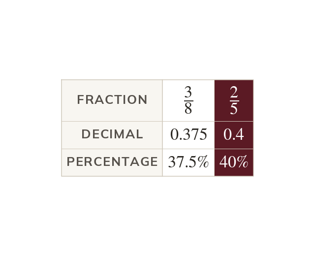
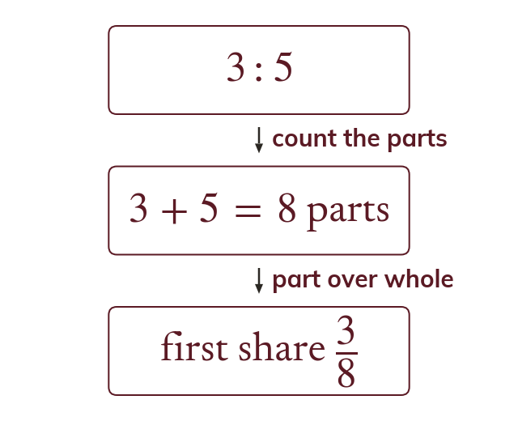
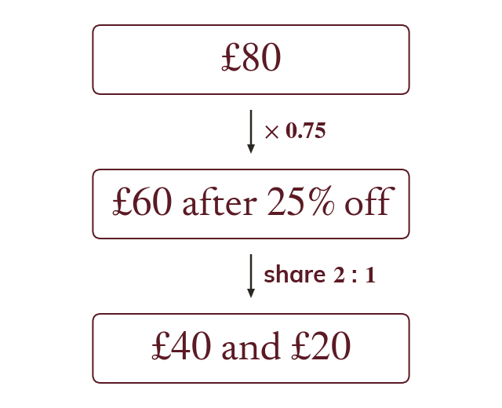
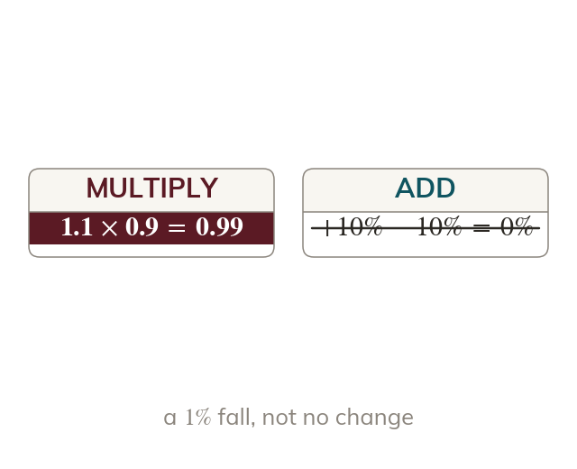

One form to compare
A fraction, a decimal and a percentage are three ways of writing one proportion. Two proportions can be compared only once they are in the same form.
A shop offers off one item and off another, and friends split the bill in a ratio. Real problems mix all the forms of a proportion at once.
Work down the page at your own pace. Write every answer in your book first, then click to check it.
Read each card, then follow the worked examples one step at a time.

A fraction, a decimal and a percentage are three ways of writing one proportion. Two proportions can be compared only once they are in the same form.

A ratio a : splits a whole into equal parts. So the first share is of the whole, not
Pick an answer. If it's wrong, the feedback tells you which mistake it was.
Read each card, then follow the worked examples one step at a time.

A multi-step problem is worked in the order the story happens. Each step's answer is the next step's starting amount.

Two changes in a row multiply their multipliers. A rise then a fall is ×
Pick an answer. If it's wrong, the feedback tells you which mistake it was.
Finished? Next lesson: 10.13.6 Recurring and Terminating Decimals.
Log in, then search for a code to practise that skill.